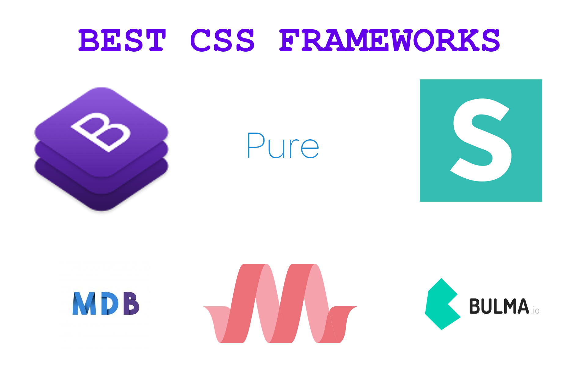

Los Frameworks CSS más Populares en 2024
En este artículo exploramos los frameworks CSS más utilizados en 2024, incluyendo Bootstrap, Tailwind CSS, y otros que están ganando terreno en diseño web moderno.
Leer más →En este artículo exploramos los frameworks CSS más utilizados en 2024, incluyendo Bootstrap, Tailwind CSS, y otros que están ganando terreno en diseño web moderno.
Leer más →ES2024 incorpora características como nuevos métodos para objetos, mejoras en promesas y novedades que facilitan el trabajo con colecciones de datos.
Leer más →El diseño web responsivo se centra en adaptar tu sitio para que se vea y funcione bien en cualquier dispositivo: móviles, tablets o pantallas grandes. Aquí repasamos buenas prácticas esenciales.
Leer más →